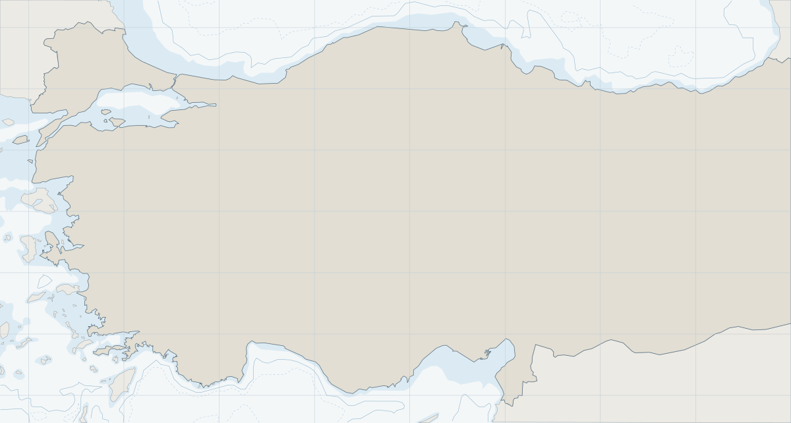
Türk limanlarında ve Boğazlarda gemi acenteliği
İstanbul'dan yönettiğimiz ekiple 2016'dan bu yana Karadeniz'den Akdeniz'e her limanda ve Boğaz geçişlerinde gemilerinizi temsil ediyoruz. Proforma için haritadan limanı seçin.
Hizmet verdiğimiz liman Merkez ofis ve operasyon üssü Kıyı ve derinlik verisi: Natural Earth. Seyir amaçlı değildir.
Bir liman uğrağında yanınızdayız
Gemi yola çıkmadan başlıyor, nihai hesapla kapanıyoruz. Her aşamada tek muhatabınız biziz.
-
Varıştan önce
Proforma dağıtım hesabı (PDA), varış bildirimleri, rıhtım ve kılavuzluk planı. Boğaz geçişlerinde VTS ve Liman Başkanlığı bildirimleri.
-
Varış ve yanaşma
Serbest pratika, gümrük ve pasaport işlemleri. Kılavuz kaptan, römorkör ve terminalle koordinasyon.
-
Limanda
Yakıt, kumanya ve tatlı su ikmali, yedek parçanın gümrükten gemiye teslimi, mürettebat değişimi ve armatöre ait işler.
-
Kalkış
Kalkış belgeleri ve resmi işlemler. Boğaz geçişinde sıra ve demir yeri takibi, geçiş boyunca kesintisiz izleme.
-
Nihai hesap
Faturalarıyla birlikte ayrıntılı nihai hesap (FDA). Proformayla arasındaki her fark açıklanır.
Ayrıca
- Koruyucu acentelik. Kiracının acente atadığı uğraklarda armatör adına masraf kontrolü ve kaptana destek.
- Proje kargo. Boru, subsea yapıları ve ağır ekipman için elleçleme, depolama ve kara nakliyesi.
- Mürettebat lojistiği. Vize, transfer ve konaklama; sahaya helikopter ya da tekneyle ulaşım.

Karadeniz'in derin deniz projelerinde kıyıdaki ekip
Filyos'taki operasyon üssümüzden, Türkiye'nin enerji projelerinde görev yapan sondaj gemileri, yüzer üretim tesisi ve bunlara hizmet veren PSV ve AHTS filolarının liman, gümrük, mürettebat ve malzeme işlerini yürütüyoruz.
- DS Fatih
- Sondaj gemisi
- DS Abdülhamid Han
- 7. nesil sondaj gemisi
- FPU Osman Gazi
- Yüzer üretim tesisi
Yetkili gemi acentesi
Ulaştırma ve Altyapı Bakanlığı gemi acenteliği yetki belgesi No. 1475, 25.08.2027'ye kadar geçerli. Gemi Acenteleri Derneği üyesi.
Yetki belgesini görüntüle (PDF)Birlikte çalıştığımız firmalardan bazıları
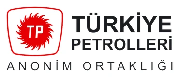
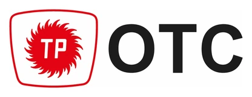
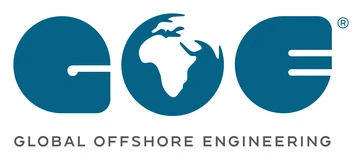
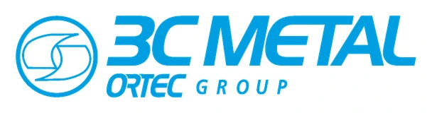
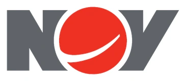
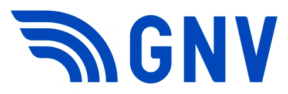
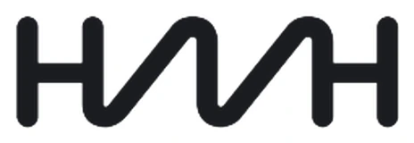
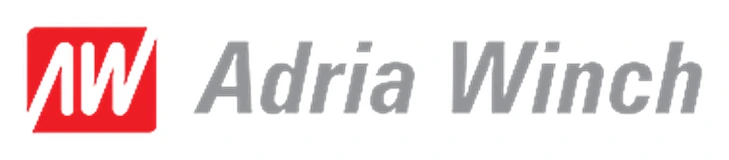
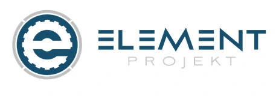
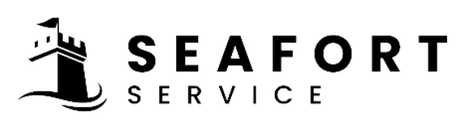
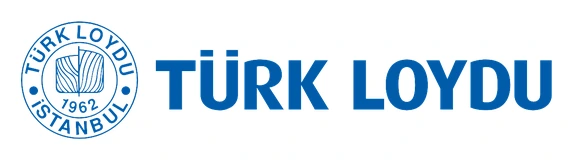
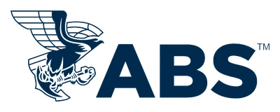
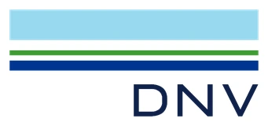
Doğrudan ulaşabileceğiniz ekip
Operasyonunuzu yürüten kişiye doğrudan ulaşın.
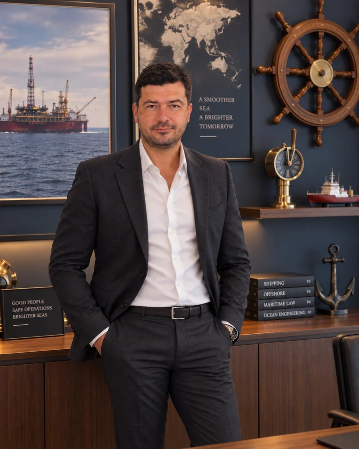

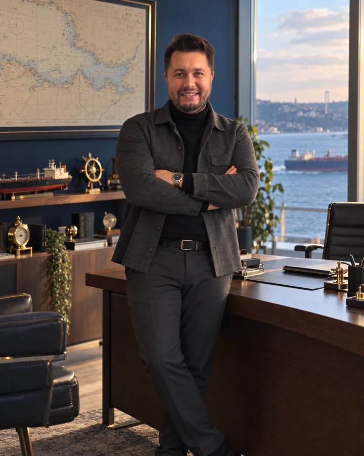
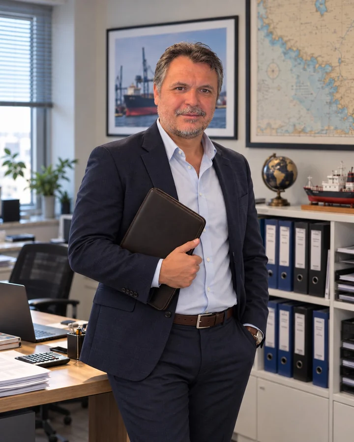

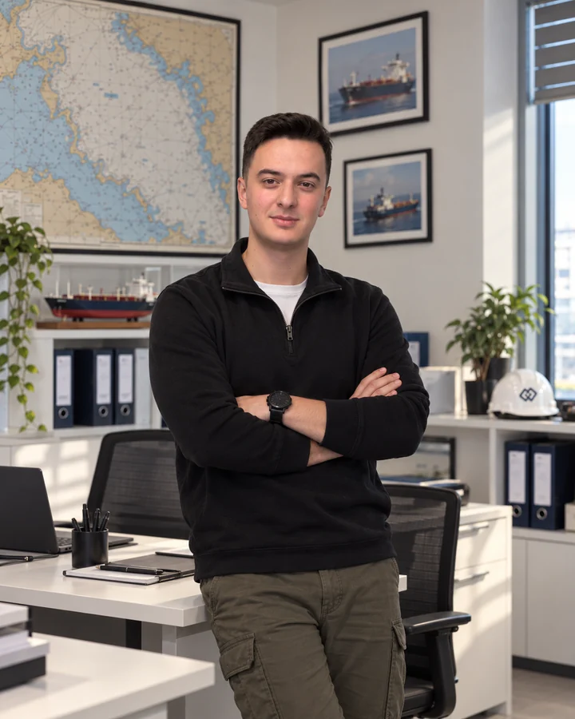
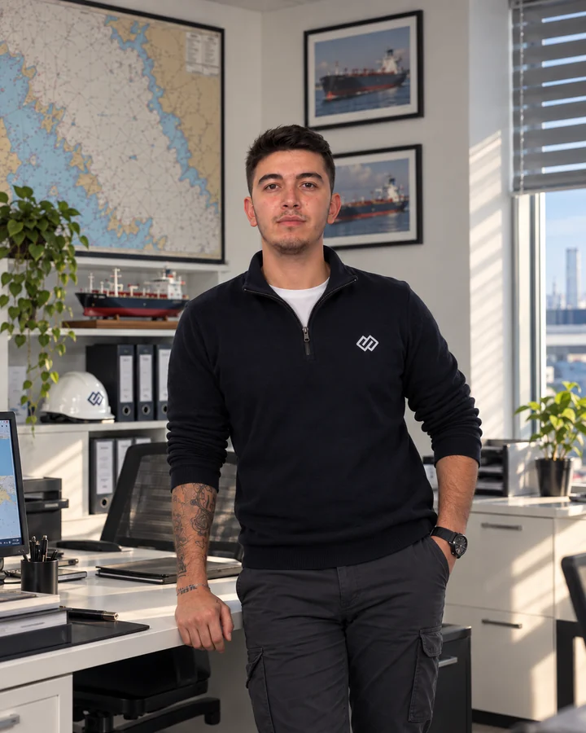
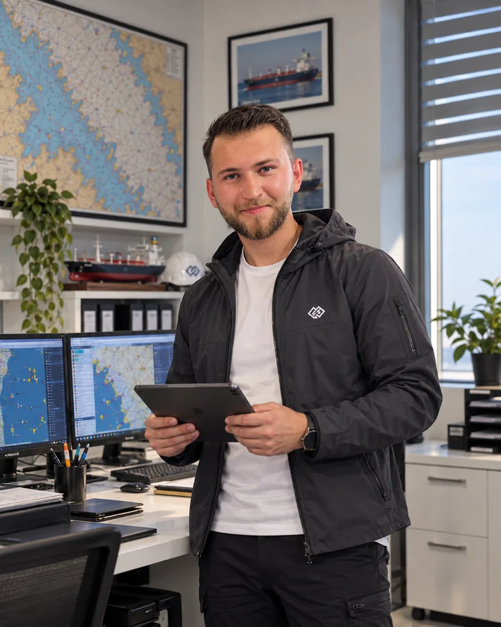

Proforma ve iletişim
Gemi, liman ve tahmini varış bilgisini gönderin; proformanızı e-postayla iletelim. Acil durumlar için operasyon hattımız 7/24 açık.
- Operasyon, 7/24
- +90 216 519 34 24
- E-posta
- agency@eseaagency.com
- Merkez ofis
- Kavacık Mah. Özkan Sok. No:3 D:2, Çelik İş Merkezi
Beykoz, İstanbul - ESEA Agency